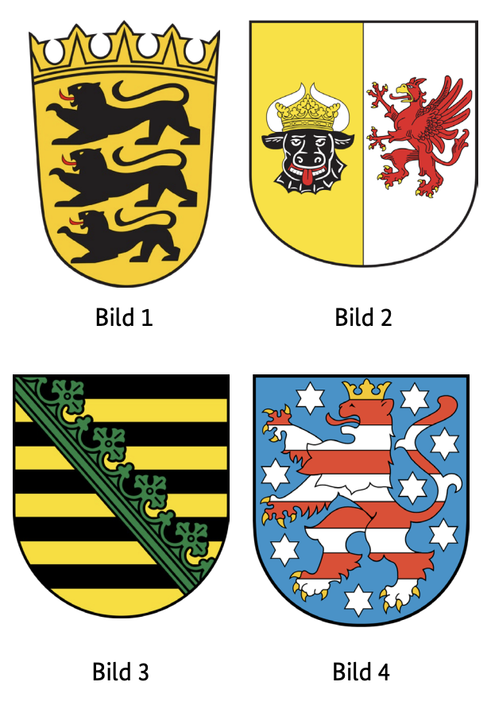
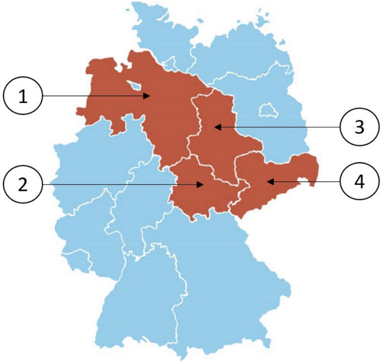

Leben in Deutschland Türingiya (Thüringen) Soruları
Resmi BAMF soru havuzundaki 10 Thüringen (TH) eyalet sorusunun Almanca ve Türkçe açıklamalı interaktif çözümleri. Soru üzerine tıklayarak bilginizi anında test edin.
Almanya vatandaşlık ve kalıcı oturum için yapılan Leben in Deutschland (LiD) sınavında adaya toplam 33 çoktan seçmeli soru sorulur:
30 Genel Soru: Demokrasi, hukuk, tarih ve toplumsal yaşam (300 genel soru havuzundan).
3 Eyalet Sorusu: İkamet ettiğiniz eyalete özel tarih, coğrafya ve anayasa soruları (Aşağıdaki 10 eyalet sorusu havuzundan).
Sınavı geçmek için 33 sorudan en az 15 doğru (Vatandaşlık şartı) veya 17 doğru (Oryantasyon kursu başarı sertifikası) yapmanız gerekmektedir.
📝 10 Resmi Thüringen Sorusunu Çözün
Soru #451 (1 / 10)Federal Eyalet: Thüringen
Welches Wappen gehört zum Freistaat Thüringen?
TR: Hangi arma Türingen Özgür Devleti'ne aittir?

✅ Doğru Cevap: Şık D (Bild 4)
Bu görev Alman federal eyaletlerinin armalarıyla ilgilidir. Size 1'den 4'e kadar numaralı dört farklı arma gösterilecek. Semboller, renkler ve armatik özellikler hakkındaki bilginize dayanarak, bu armalardan hangisinin Thüringen Özgür Devleti'ne ait olduğunu tanımalısınız.
In dieser Aufgabe geht es um Landeswappen deutscher Bundesländer. Dir werden vier verschiedene Wappen mit den Nummern 1 bis 4 gezeigt. Anhand deines Wissens über Symbole, Farben und heraldische Merkmale sollst du erkennen, welches dieser Wappen zum Freistaat Thüringen gehört.
This task is about coats of arms of German federal states. You will be shown four different coats of arms with the numbers 1 to 4. Based on your knowledge of symbols, colors and heraldic features, you should recognize which of these coats of arms belongs to the Free State of Thuringia.
تتعلق هذه المهمة بشعارات الولايات الفيدرالية الألمانية. سيتم عرض أربعة شعارات مختلفة تحمل الأرقام من 1 إلى 4. استنادا إلى معرفتك بالرموز والألوان والسمات الشعارية، يجب أن تعرف أي من هذه الشعارات ينتمي إلى ولاية تورينغن الحرة.
Це завдання стосується гербів федеральних земель Німеччини. Вам покажуть чотири різні герби з числами від 1 до 4. Виходячи з ваших знань про символи, кольори та геральдичні елементи, ви повинні визначити, який із цих гербів належить Вільній землі Тюрингія.
Soru #452 (2 / 10)Federal Eyalet: Thüringen
Welches ist ein Landkreis in Thüringen?
TR: Türingen'de hangi ilçe var?
✅ Doğru Cevap: Şık D (Wartburgkreis)
Soru, Almanya'nın idari yapısıyla ilgilidir. Almanya, federal eyaletlere bölünmüştür ve bu eyaletlerin de bölgeleri vardır. Thüringen bu federal eyaletlerden biridir. Bu görevde, farklı federal eyaletlerden gelen birkaç bölge karşılaştırılacak. Gerçekten Thüringen eyaletine ait olan bölge aranmaktadır.
Die Frage bezieht sich auf die Verwaltungsstruktur Deutschlands. Deutschland ist in Bundesländer unterteilt, die wiederum Landkreise haben. Thüringen ist eines dieser Bundesländer. In der Aufgabe sollen mehrere Landkreise verglichen werden, die aus verschiedenen Bundesländern stammen können. Gesucht ist der Landkreis, der tatsächlich zum Bundesland Thüringen gehört.
The question relates to the administrative structure of Germany. Germany is divided into federal states, which in turn have districts. Thuringia is one of these federal states. In the task, several districts are to be compared, which can come from different federal states. The district that actually belongs to the state of Thuringia is sought.
السؤال يتعلق بالهيكل الإداري لألمانيا. تنقسم ألمانيا إلى ولايات اتحادية، والتي بدورها لها مناطق. تورينغن هي واحدة من هذه الولايات الفيدرالية. في هذه المهمة، يجب مقارنة عدة مناطق، والتي قد تأتي من ولايات اتحادية مختلفة. الدائرة التي تنتمي فعليا إلى ولاية تورينغن مطلوبة.
Питання стосується адміністративної структури Німеччини. Німеччина поділена на федеральні землі, які, у свою чергу, мають округи. Тюрингія — одна з таких федеральних земель. У цьому завданні слід порівнювати кілька округів, які можуть походити з різних федеральних штатів. Розшукується округ, який фактично належить землі Тюрингія.
Soru #453 (3 / 10)Federal Eyalet: Thüringen
Für wie viele Jahre wird der Landtag in Thüringen gewählt?
TR: Türingen eyalet parlamentosu kaç yıl boyunca seçilecek?
✅ Doğru Cevap: Şık C (5)
Soru, Almanya'nın Thüringen eyaletinin siyasi sistemiyle ilgilidir. Eyalet parlamentosu, eyalet parlamentosudur ve oy hakkı olan vatandaşlar tarafından düzenli aralıklarla seçilir. Seçim süresinin süresi yasayla belirlenir ve milletvekillerinin yetki süresini ne kadar sürede kullanacağını belirler.
Die Frage bezieht sich auf das politische System des deutschen Bundeslandes Thüringen. Der Landtag ist das Landesparlament und wird in regelmäßigen Abständen von den wahlberechtigten Bürgerinnen und Bürgern gewählt. Die Länge der Wahlperiode ist gesetzlich festgelegt und bestimmt, wie lange die Abgeordneten ihr Mandat ausüben.
The question relates to the political system of the German state of Thuringia. The state parliament is the state parliament and is elected at regular intervals by the citizens entitled to vote. The length of the electoral period is determined by law and determines how long the members of parliament exercise their mandate.
تتعلق المسألة بالنظام السياسي لدولة تورينغن الألمانية. البرلمان الحكومي هو البرلمان المحلي وينتخب على فترات منتظمة من قبل المواطنين المؤهلين للتصويت. يتم تحديد مدة فترة الانتخابات بموجب القانون وتحدد مدة ممارسة أعضاء البرلمان لولاية عملهم.
Питання стосується політичної системи німецької землі Тюрингія. Державний парламент є державним парламентом і обирається з регулярними інтервалами громадянами, які мають право голосу. Тривалість виборчого періоду визначається законом і визначає, як довго члени парламенту здійснюють свій мандат.
Soru #454 (4 / 10)Federal Eyalet: Thüringen
Ab welchem Alter darf man in Thüringen bei Kommunalwahlen wählen?
TR: Türingen'de yerel seçimlerde hangi yaştan oy verebilirsiniz?
?
✅ Doğru Cevap: Şık B (16)
Almanya'daki hayat için önemli bir soru
Wichtige Frage für das Leben in Deutschland
Important question for life in Germany
سؤال مهم للحياة في ألمانيا
Важливе питання для життя в Німеччині
Soru #455 (5 / 10)Federal Eyalet: Thüringen
Welche Farben hat die Landesflagge von Thüringen?
TR: Thüringen eyalet bayrağı hangi renklere sahip?
✅ Doğru Cevap: Şık B (weiß-rot)
Alman federal eyaletleri hakkında yapılan bir bilgi yarışmasının bir parçası olarak, odak noktası sembolleri ve kimlikleri üzerine. Ulusal bayrak, genellikle tarihsel ve kültürel öneme sahip olup, bu konuda önemli bir rol oynar. Aşağıdaki soru, Thüringen eyaletinin bayrağının renkleri hakkındaki bilginizi test eder ve seçebileceğiniz birkaç cevap seçeneği sunar.
Im Rahmen eines Quiz über die deutschen Bundesländer geht es um deren Symbole und Identität. Eine wichtige Rolle spielt dabei die Landesflagge, die oft historische und kulturelle Bedeutung hat. Die folgende Frage prüft dein Wissen über die Farben der Flagge des Bundeslandes Thüringen und bietet mehrere Antwortmöglichkeiten zur Auswahl.
As part of a quiz about the German federal states, the focus is on their symbols and identity. The national flag, which often has historical and cultural significance, plays an important role in this. The following question tests your knowledge of the colors of the flag of the state of Thuringia and offers several answer options to choose from.
كجزء من اختبار عن الولايات الفيدرالية الألمانية، يتركز التركيز على رموزها وهويتها. يلعب العلم الوطني، الذي غالبا ما يكون له أهمية تاريخية وثقافية، دورا مهما في ذلك. السؤال التالي يختبر معرفتك بألوان علم ولاية تورينغن ويقدم عدة خيارات للاختيار من بينها.
У рамках тесту про німецькі федеральні землі увага приділяється їхнім символам та ідентичності. Національний прапор, який часто має історичне та культурне значення, відіграє важливу роль у цьому. Наступне питання перевіряє ваші знання кольорів прапора землі Тюрингія та пропонує кілька варіантів відповідей.
Soru #456 (6 / 10)Federal Eyalet: Thüringen
Wo können Sie sich in Thüringen über politische Themen informieren?
TR: Türingen'de siyasi konuları nereden öğrenebilirsiniz?
?
✅ Doğru Cevap: Şık C (bei der Landeszentrale für politische Bildung)
Almanya'daki hayat için önemli bir soru
Wichtige Frage für das Leben in Deutschland
Important question for life in Germany
سؤال مهم للحياة في ألمانيا
Важливе питання для життя в Німеччині
Soru #457 (7 / 10)Federal Eyalet: Thüringen
Die Landeshauptstadt von Thüringen heißt …
TR: Thüringen eyalet başkenti ...
✅ Doğru Cevap: Şık B (Erfurt)
Almanya, her birinin kendi eyalet başkentine sahip 16 federal eyaletten oluşur. Thüringen, Almanya'nın ortasında yer almakta olup, tarihsel ve kültürel öneme sahip birkaç önemli şehre sahiptir. Soru, Thüringen eyalet hükümetinin merkezli olduğu şehri belirlemeyi amaçlıyor.
Deutschland besteht aus 16 Bundesländern, von denen jedes eine eigene Landeshauptstadt hat. Thüringen liegt in der Mitte Deutschlands und besitzt mehrere bedeutende Städte mit historischer und kultureller Bedeutung. Die Frage zielt darauf ab, die Stadt zu erkennen, in der die Landesregierung Thüringens ihren Sitz hat.
Germany consists of 16 federal states, each of which has its own state capital. Thuringia is located in the middle of Germany and has several important cities with historical and cultural significance. The question aims to identify the city in which the state government of Thuringia is based.
تتكون ألمانيا من 16 ولاية اتحادية، لكل منها عاصمة ولاية خاصة بها. تقع تورينغن في وسط ألمانيا وتضم عدة مدن مهمة ذات أهمية تاريخية وثقافية. يهدف السؤال إلى تحديد المدينة التي تتخذ من حكومة ولاية تورينغن مقرا لها.
Німеччина складається з 16 федеральних земель, кожна з яких має власну столицю. Тюрингія розташована в центрі Німеччини і має кілька важливих міст із історичним та культурним значенням. Питання має на меті визначити місто, в якому базується уряд землі Тюрингія.
Soru #458 (8 / 10)Federal Eyalet: Thüringen
Welches Bundesland ist Thüringen?
TR: Türingen hangi eyalet?

✅ Doğru Cevap: Şık B (2)
Bu görev, Alman federal eyaletlerinin coğrafi sınıflandırılmasıyla ilgilidir. Bir haritada veya listede federal eyaletler numaralarla işaretlenmiştir. Soru, bu sayıların hangisinin Türingen eyaletine karşılık geldiğini kontrol eder. Thüringen'i doğru şekilde atayan numarayı seçin.
In dieser Aufgabe geht es um die geografische Einordnung der deutschen Bundesländer. Auf einer Karte oder in einer Liste sind die Bundesländer mit Zahlen gekennzeichnet. Die Frage prüft, welche dieser Nummern dem Bundesland Thüringen entspricht. Wählen Sie die Zahl aus, die Thüringen richtig zuordnet.
This task is about the geographical classification of the German federal states. On a map or in a list, the federal states are marked with numbers. The question checks which of these numbers corresponds to the state of Thuringia. Select the number that correctly assigns Thuringia.
تتعلق هذه المهمة بالتصنيف الجغرافي للولايات الفيدرالية الألمانية. على الخريطة أو في القائمة، يتم تمييز الولايات الفيدرالية بالأرقام. يحدد السؤال أي من هذه الأرقام يتوافق مع ولاية تورينغن. اختر الرقم الذي يحدد تورينغن بشكل صحيح.
Це завдання стосується географічної класифікації федеральних земель Німеччини. На карті або у списку федеральні землі позначені номерами. Питання перевіряє, яке з цих чисел відповідає землі Тюрингія. Виберіть номер, який правильно присвоїть Тюрингії.
Soru #459 (9 / 10)Federal Eyalet: Thüringen
Wie nennt man die Regierungschefin / den Regierungschef in Thüringen?
TR: Hükümet başkanına ne diyorsunuz?
Türingen mi?
✅ Doğru Cevap: Şık D (Ministerpräsidentin / Ministerpräsident)
Almanya'daki hayat için önemli bir soru
Wichtige Frage für das Leben in Deutschland
Important question for life in Germany
سؤال مهم للحياة في ألمانيا
Важливе питання для життя в Німеччині
Soru #460 (10 / 10)Federal Eyalet: Thüringen
Welche Ministerin / welchen Minister hat Thüringen nicht?
TR: Türingen'de hangi bakan yok?
✅ Doğru Cevap: Şık B (Außenministerin / Außenminister)
Soru, Almanya'nın Thüringen eyaletinin devlet hükümetinin yapısıyla ilgilidir. Her federal eyaletin, federal hükümetin görevlerinden farklı olan belirli politika alanları için kendi bakanlıkları vardır. Bazı departmanlar genellikle eyalet düzeyindedir, bazıları ise sadece federal düzeyde mevcuttur. Soruyu yanıtlamak için, bir federal eyaletin hangi sorumluluklara sahip olduğunu ve hangi bakanlıkların yalnızca federal düzeyde yer aldığını bilmeniz gerekir.
Die Frage bezieht sich auf die Struktur der Landesregierung des deutschen Bundeslandes Thüringen. Jedes Bundesland hat eigene Ministerien für bestimmte Politikbereiche, die sich von den Aufgaben der Bundesregierung unterscheiden. Einige Ressorts sind typisch auf Landesebene, andere existieren nur auf Bundesebene. Um die Frage zu beantworten, sollte man wissen, welche Zuständigkeiten ein Bundesland hat und welche Ministerien ausschließlich auf Bundesebene angesiedelt sind.
The question relates to the structure of the state government of the German state of Thuringia. Each federal state has its own ministries for certain policy areas, which differ from the tasks of the federal government. Some departments are typically at the state level, others only exist at the federal level. To answer the question, you should know what responsibilities a federal state has and which ministries are located exclusively at the federal level.
تتعلق المسألة بهيكل حكومة ولاية تورينغن الألمانية. لكل ولاية اتحادية وزاراتها الخاصة لمجالات سياسية معينة، تختلف عن مهام الحكومة الفيدرالية. بعض الأقسام عادة على مستوى الولايات، والبعض الآخر موجود فقط على المستوى الفيدرالي. للإجابة على السؤال، يجب أن تعرف ما هي مسؤوليات الدولة الفيدرالية وأي الوزارات تقع حصريا على المستوى الفيدرالي.
Питання стосується структури земельного уряду німецької землі Тюрингія. Кожна федеральна земля має власні міністерства для певних політичних напрямків, які відрізняються від завдань федерального уряду. Деякі департаменти зазвичай працюють на рівні штату, інші — лише на федеральному рівні. Щоб відповісти на питання, вам слід знати, які обов'язки має федеральна земля і які міністерства розташовані виключно на федеральному рівні.
300 Genel Soruyu ve Eyalet Sorularını Eksiksiz Çalışın
DeutschLernen LiD Trainer'da tüm 310 soruyu 5 farklı dilde (Türkçe, İngilizce, Arapça, Ukraynaca, Almanca) çözebilir, deneme sınavı simülasyonu yapabilirsiniz.